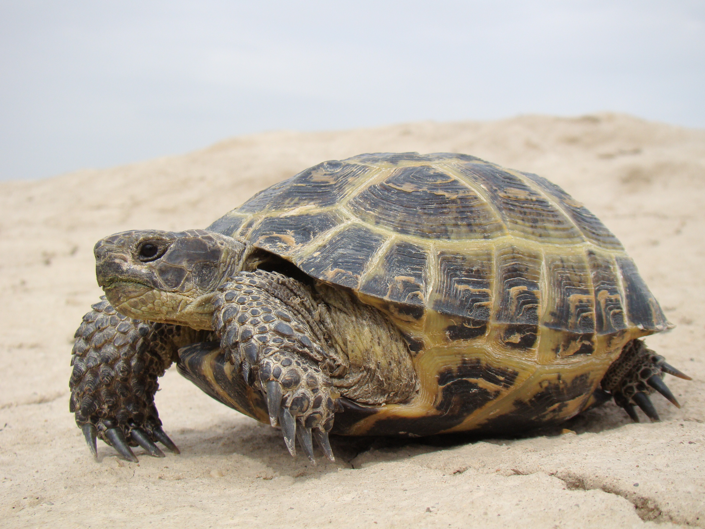

Наймудріший та найспокійніший член нашої родини

| Вид: | Черезпаха сухопутна |
| Кличка: | Зефірка |
| Вік: | 5 років |
| Улюблена справа: | Нікуди не поспішати |
Я нікуди не поспішаю, бо знаю, що весь світ зачекає. Мій день складається з повільних прогулянок по кімнаті та тривалого відпочинку під теплою лампою. Маю свій власний міцний панцир, який захищає мене від усього на світі.